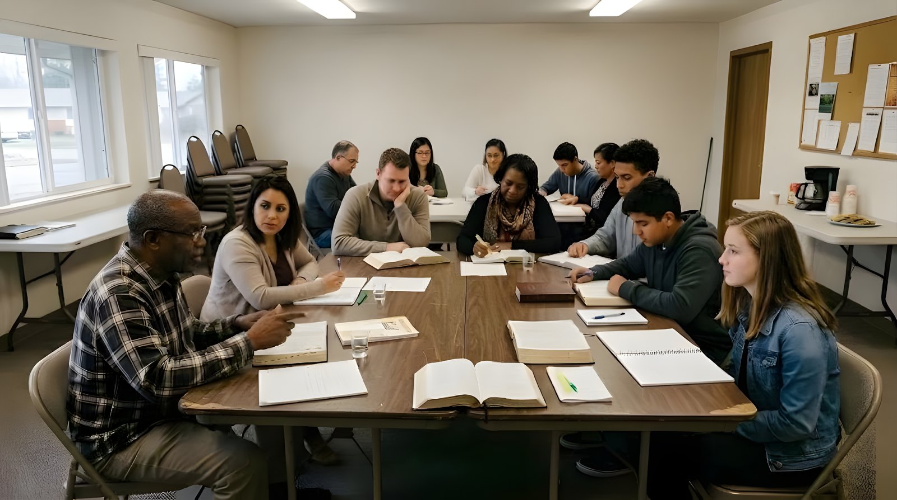

WHERE THE BIBLE MEANS WHAT IT SAYS.
Zay-Marie Press publishes doctrinally sound, spiritually fruitful books anchored in the authority, clarity, and sufficiency of Scripture. Our purpose is to equip believers, edify the Church, and advance the faithful proclamation of God's Word.
“Everything we publish is meant to strengthen the Church, not merely sell to it.”
Zay-Marie Press is a biblical-doctrinal publishing house. We prioritize Scripture over sentiment, doctrine over trend, clarity over ambiguity, theological precision over broad appeal, and eternal purpose over market categories. Every book, course, digital study, and free resource we produce is built on the same defined theological foundations.

Four ways into the same foundation
Each product answers a different need, from a quick answer to a full argument.
Study one subject deeply
Sixteen-page studies that walk a passage or doctrine through the text.
$5.99 eachEXPLORE STUDIES → 40Commentary volumesWeigh a whole-Bible argument
Eight series, each volume arguing one position from Scripture.
$14.99 eachSEE THE COLLECTION → 66Bible Book CompanionsStudy one book at a time
A short printable guide for every book of the Bible.
$2.99 eachSEE THE COMPANIONS → 50Reader QuestionsGet a straight answer
Free answers on difficult verses, with a search by passage.
FreeSEARCH QUESTIONS →Four commitments behind every page
These are the habits every study, volume and companion is built on.
The text comes first
We begin with what a passage says, in its own chapter and setting, before we draw any conclusion from it.
Rightly divided
Scripture is addressed to different people at different times. We ask who is being spoken to before we ask how it applies.
Israel and the Body, distinct
Israel’s prophetic program and the Body of Christ’s mystery calling run on their own lines and are not merged.
The King James Bible
Every verse we quote is from the King James Version, so you can check each reading against the same words.
Explore Alexander S. Marien's Work
Start with The Full Framework, browse the Digital Studies library, or download a free resource.